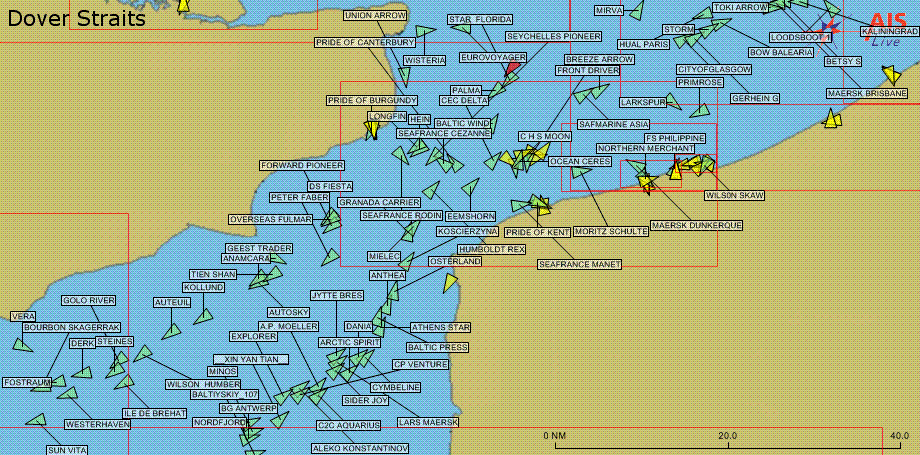

Classifying Ships from Automatic Indentification System (AIS) Data#

Introduction#
AIS has long been used for maritime safety and security, but it is increasingly being used for other purposes, such as fisheries management, environmental monitoring, and even to track the movements of whales. The data is collected by satellites and terrestrial receivers, and is freely available from a number of sources. The data is transmitted by ships, and includes information such as the ship’s position, speed, heading, and other information.
AIS has also been used as a cover of illegal activities in the lucrative maritime trading sector or to conduct illegal fishing in combination with other methods.
You will find the AIS data you need here.
Task 1: Run the notebook (10 points)#
You will be working with this notebook to document and run experiments. Some of the questions would require you to type some code. Please use the notebook in your local (docker) environment or via Colab. No submissions via Kaggle will be accepted.
Eliminate models that do not belong to the category of ensemble methods and ensure that the notebook is running without any manual intervention. To do so, you need to ensure that Kaggle datasets are downloaded seamlessly during execution. See here how to do it.
Task 2: Random Forest (20 points)#
The notebook uses a random forest classifier.
Task 2A (5 points)#
Explain why a decision tree alone would not be a good choice for this problem.
Task 2B (15 points)#
Explain how a random forest is making a final determination of the ship type. In other words, how does it combine the results of the individual trees to make a final prediction. We need an equation, its explanation, and reference to specific lines of code in the Random Forest classifier class.
Task 3: CV vs Bootstrapping (20 points)#
In the notebook, the author uses cross-validation to evaluate the models.
Task 3A (5 points)#
What is CV and why is it used? Explain how it works and why it is useful.
Task 3B (15 points)#
Modify the code to include bootstrapping and compare the performance of the random forest classifier agaist that of CV.
Task 4: Feature Importance (20 points)#
Explain how the feature importance ranking was obtained (~cell 55).
Task 5: Gradient Boosting (30 points)#
Do you agree with the results that Random Forst performs better than Gradient Boosting ? Support your answer by
Task 5A: lightGBM (15 points)#
Use the lightGBM library to attempt to shed some light into Gradient Boosting performance.
Task 5B: Optuna (15 points)#
Use the Optuna libary to tune any hyperparameters that you believe will make a difference. Explain what each hyperparameter does.